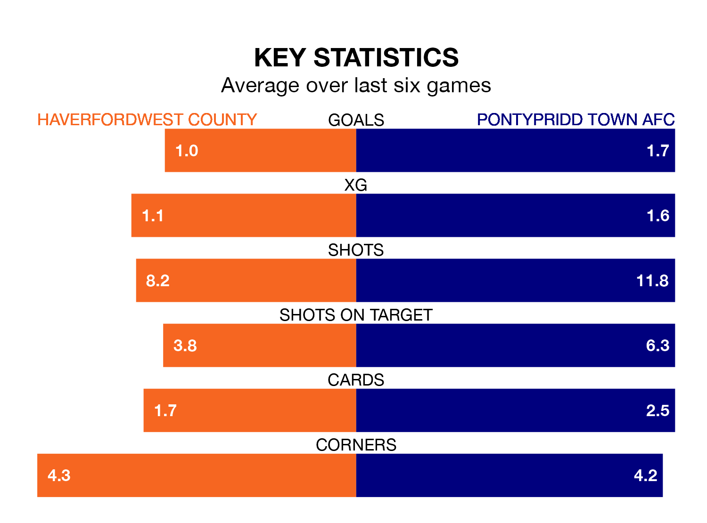

Haverfordwest County host Pontypridd Town AFC in Friday's late match at the New Bridge Meadow Stadium looking to bounce back from defeat last time out in the Welsh Premier League.
The Bluebirds, who sit zero in the league after 23 games, fell to a 1-0 away defeat to Aberystwyth Town on February 2.
They face a Pontypridd Town side who picked up a win in their last match, a 3-0 victory against Barry Town United, and who sit zero in the table.
With 16 goals in 23 games so far this season, Pontypridd Town are the league's-5th-lowest scorers with 0.7 goals per game. But they are conceding fewer than average too, letting in 31 goals at a rate of 1.3 per game.
Haverfordwest are also below average scorers, with 1.3 goals per game, compared to a league average of 1.5. They have conceded 1.5 goals per game.
In the last 10 years, Haverfordwest and Pontypridd Town have played each other on eight occasions. They won three each, and they drew twice.
On average, the Bluebirds scored 1.5 goals and the Dragons 1.4 in those matches.
Their last meeting was on October 7, when Pontypridd Town won 2-0 at home.
County are in mixed form in the Welsh Premier League, with two wins and a draw from their last six games.
With three wins and three losses over that period, the Dragons' form is slightly better – they have taken nine points from 18, compared to the Bluebirds' seven.
Updated: 10:28 (UTC), 06/02/24